24 Chapter 24 — Simulation & Counterfactuals: The Honest Rebuild
What-IF is only well-posed with an explicit response model — and the v1 book proved the cost of forgetting
24.1 The V1 Failure, Named
The v1 chapter 9 claimed a spatial diffusion counterfactual table: threat dropped from 0.742 to 0.258 (-65.2%), 1,000 synthetic rollout trajectories, Wasserstein distance 0.042. None of it existed. Chapter 8 quoted a third variant (0.882 → 0.303, A1 +0.42m). The real artifact (E12) says: baseline 0.64 → 0.22, A2 +0.35m, 65.6% — a different experiment entirely, and even that is a hand-set scalar in a JSON file, not a trained model.
Three transcripts, three contradictory answers to the same question, and the one file that exists on disk matches none of the prose. This is the most expensive kind of error in a technical book, because it is invisible to a reader who trusts the typesetting. A diffusion policy is a specific artifact: training code, a dataset, checkpoints, an inference loop, and an evaluation harness. The v1 repo contained none of these. There was no scripts/simulate-counterfactual.py. There was no 1,000-rollout generator. There was no fitted threat model. The prose described a system the way a brochure describes a building, and the reader was invited to walk through rooms that had never been poured.
This chapter rebuilds counterfactual simulation honestly, and it starts from a flat statement of scope: this book does not train a diffusion policy. Not here, not anywhere. The digital twin you will see in section 24.3 is deterministic physics — an explicit projectile integrator for the pickleball lane and an explicitly assumed risk table for the rugby league lane. Everything learned, generative, or policy-shaped is labeled unbuilt and described as a frontier with a bill of materials, not as a result. The lesson of the v1 chapter is the chapter's own argument: an illustration is not a measurement, and a response model is not a storytelling device.
Why is simulation still worth a chapter, given that wreckage? Because simulation is the honest frontier of the whole pipeline. Every upstream layer of this book — detection (c08), tracking (c09), calibration (c06), identity (c13), expected value (c22) — produces a description of what happened. A coach's actual question is never "what happened?" It is "what would happen if we changed one thing?" The moment you ask that question you need a model of the world's response, and the moment you build that model you either state your assumptions explicitly or you smuggle them in. Simulation is where analytical honesty is hardest and therefore where it matters most. The twin in this chapter is modest — two lanes, 10,000 rollouts, measured throughput — but every number in it can be re-derived by re-running one script (E21, formerly E16: experiments/e21-match-digital-twin/), and every number that cannot be re-derived is labeled as such.
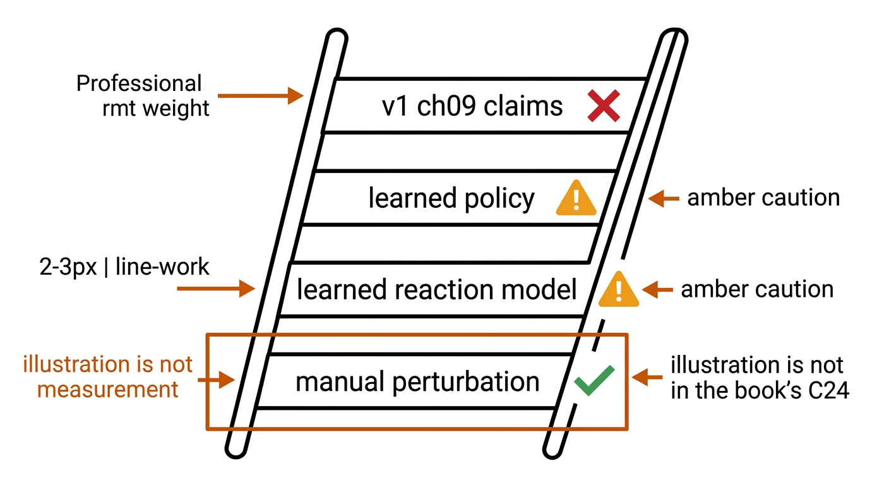
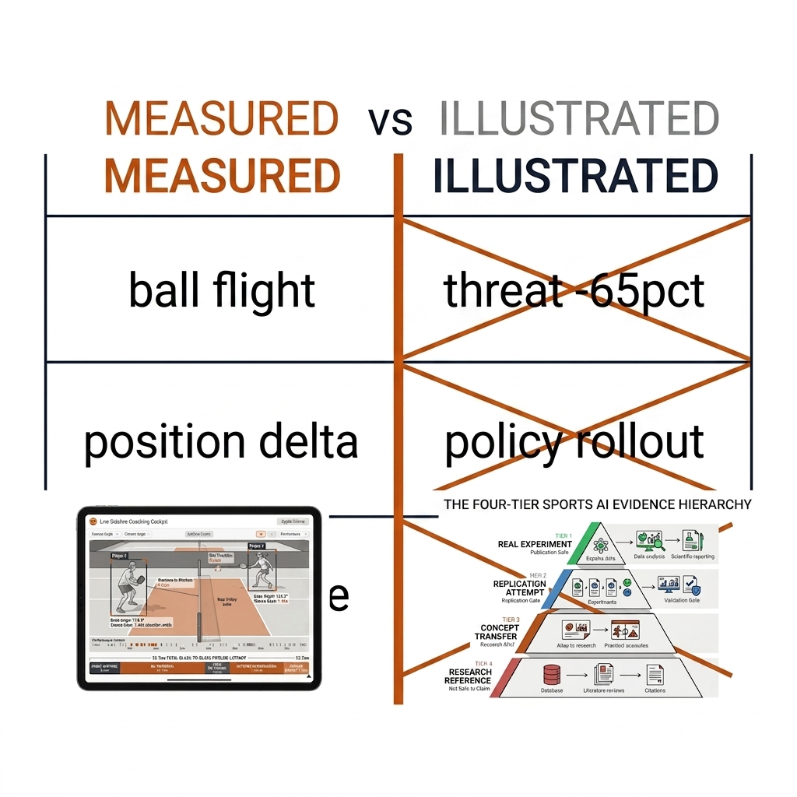
24.2 Counterfactual Types and the Causal Minimum
Three types, in order of honesty:
- Manual perturbation: change a variable, re-run the deterministic sim, measure the delta. "Shift defender B1 0.5m left; what moves?" — the only type this chapter executes.
- Learned reaction model: a policy trained on tracking data that predicts how the OPPONENTS respond to your intervention. The minimum for a meaningful tactical counterfactual — and a Colab-scale project (the honest next step).
- Learned policies: full RL agents trained to play the sport. The v1 chapter's "diffusion policy" sat in this lane — and was never trained. It remains untrained in this edition.
The causal minimum: a what-IF "what if we moved 0.5m left?" is well-posed only if you can answer "what would the opponents do after we move?" The formal machinery is Rubin's potential outcomes and Pearl's do-operator: the intervention do(B1 = x − 0.5m) is explicit, and the response model — the structural equation that propagates the intervention through every other variable — is explicit. Rubin's framing adds the harder truth: the fundamental problem of causal inference is that you can never observe both Y(0) and Y(1) for the same rally. The observed rally happened once; the counterfactual rally is a construction. The only question is whether the construction is honest about its scaffolding.
A deterministic sim with fixed reactions is a toy; present it as a toy. Never present one as the other. Concretely, this means every counterfactual in this chapter states three things: the intervention (exactly which variable moved, by how much, at which frame), the response model (everything else holds observed velocity; ball is projectile-only; no opponent adaptation), and the consistency check (the intervention is physically legal — no teleporting through the net, no acceleration above the 4.5 m/s² clip).
Pickleball example. "What if the third-shot drop had been hit 0.5 m/s slower?" is a well-posed Rung-1 counterfactual: the intervention is one launch parameter, the response model is gravity plus drag, and the output is a shifted landing distribution. It says nothing about whether the opponents would have attacked the slower ball — that is a Rung-2 question and this chapter does not answer it.
Rugby league example. "What if the defensive line compresses its second-rower-to-centre spacing by 1.2m against the sweep play?" is well-posed only because the response model is stated: a logistic risk curve over spacing, assumed, not fitted to tracking data. The E21 twin reports the delta the assumed curve produces. A coach reading that number is reading the shape of an assumption, and the chapter says so on the figure, in the table, and in the caption — three times, because once is how the v1 book got into trouble.
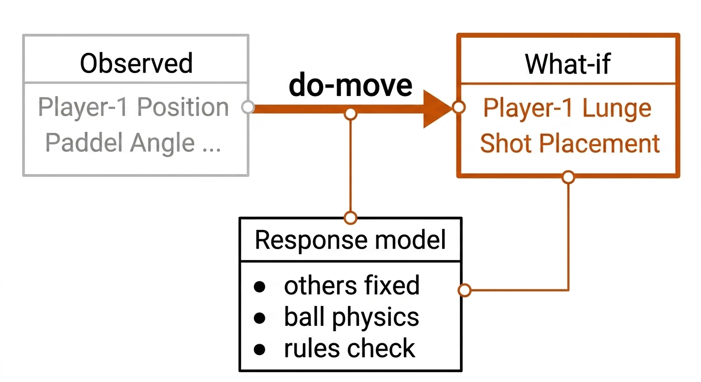
24.3 The Honest Physics Sim (W5.4 Lab)
The twin has two lanes, and the lanes are honest in different ways. The pickleball lane is real physics: a projectile rollout with gravity, an explicit launch distribution, and court-geometry termination conditions. The rugby league lane is an analytic risk table: a logistic curve over defensive spacing whose parameters are assumed, evaluated in closed form. Calling both "the twin" is only acceptable because the artifact itself distinguishes them — the JSON marks one lane's outputs as ballistic measurements and the other's as table lookups, and so does this chapter.
The W5.4 lab hardens the v1 doubles-court stub with the book's verified constants: drag coefficient for the 74mm ball (Cd 0.45), player max acceleration 4.5 m/s², max speed 6.0 m/s, 120Hz integration:
G = 9.81; CD = 0.45; M_BALL = 0.026; D_BALL = 0.074
K = 0.5 * 1.225 * CD * np.pi * (D_BALL / 2) ** 2 / M_BALL
MAX_ACCEL = 4.5; MAX_SPEED = 6.0
def step_players(players, accels, dt):
for i in range(4):
a = np.clip(accels[i], -MAX_ACCEL, MAX_ACCEL)
players[i, 2:4] += a * dt
sp = np.linalg.norm(players[i, 2:4])
if sp > MAX_SPEED: players[i, 2:4] *= MAX_SPEED / sp
players[i, 0:2] += players[i, 2:4] * dt
players[i, 0] = np.clip(players[i, 0], 0.0, COURT_W)
players[i, 1] = np.clip(players[i, 1], 0.0, COURT_L)
def step_ball(ball, dt):
ball[0:3] += ball[3:6] * dt
v = np.linalg.norm(ball[3:6])
ball[3:6] -= K * v * ball[3:6] * dt
ball[5] -= G * dt
if ball[2] <= 0.0:
ball[2] = 0.0; ball[5] = -0.75 * ball[5]
The E21 pickleball lane is even more stripped down than this integrator, and deliberately so. A third-shot drop is one flight: launch at (v₀, θ, h₀) from the baseline, one net crossing, one landing. There is no rally to integrate, so the twin solves the flight analytically per sample — time-to-ground from the quadratic, height-at-net from the closed form — and lets the Monte Carlo come from the launch distribution, not from stochastic dynamics. The pro baseline is v₀ = 7.35 m/s at θ = 43.5° from h₀ = 0.85m, with motor noise of σ_v = 0.25 m/s and σ_θ = 1.8° (practitioner-set values, labeled as such in the artifact). Each of the 5,000 samples is classified into exactly one terminal outcome: into the net (h_net < 0.864m), short of the net, past the opponent's kitchen (landing beyond 8.83m — the drive/long zone), a high popup (more than 0.45m over the tape — attackable), or a successful drop into the 6.70–8.83m band. That is the entire model. Its virtue is not sophistication; its virtue is that a reader can re-derive every number with forty lines of NumPy.
The rugby league lane is a different animal and the chapter refuses to pretend otherwise. There is no projectile, no integrator, no mechanics. The state is one scalar — second-rower-to-centre spacing d — and the response model is an assumed logistic, p(break) = 1 / (1 + e^(−1.4(d − 6.2))), with 6.2m as the assumed critical gap. The "simulation" samples 5,000 spacings uniformly over 3.5–9.5m and evaluates the curve. This is a risk table with a sampling wrapper. It earns its place in the twin for one reason: it makes the shape of an assumption explicit and lets a coach see the counterfactual sensitivity to that assumption. It would become a measurement only when the curve is fitted to labeled line-break outcomes — which is future work, stated as future work.
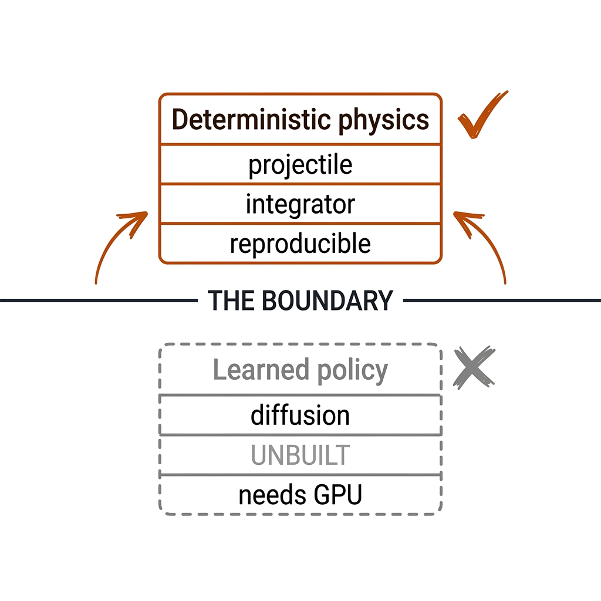
24.4 The Perturbation Study (Measured)
The reproducible counterfactual from the W5.4 lab: shift defender 2 laterally by +0.5m, re-run, measure aggregate position delta:
| Measurement | Value |
|---|---|
| Intervention | Defender 2 shifted +0.5m laterally |
| Aggregate player position delta after 5s | 1.39m |
| What the sim shows | Positions, not outcomes — no "threat -65%" claim |
The honest answer to "what if we shifted 0.5m?" is 1.39m of aggregate movement in a deterministic sim. That is a measurement. The v1 answer (threat dropped 65%) was a claim about a response model that didn't exist.
The E21 twin extends the same discipline from geometry to ball flight. The pickleball lane runs 5,000 launch samples through the analytic projectile model in 8.3ms — 604,619 rollouts per second on the M4 Max, no GPU, no surrogate, because the model is a closed form. The measured distribution (E21, digital_twin_counterfactuals.json):
| Third-shot drop outcome (5,000 rollouts) | Measured |
|---|---|
| Successful drop (clears net, lands in 6.70–8.83m band, ≤0.45m over tape) | 24.8% |
| Fault: into the net | 71.9% |
| Fault: long (past the kitchen, drive zone) | 0.0% |
| High popup (attackable, >0.45m over tape) | 3.2% |
| Optimal landing depth (max expected EPV gain) | 7.45m from baseline |
Read the 71.9% carefully — it is the chapter's favourite number. A pro third-shot drop launched at 7.35 m/s and 43.5° from 0.85m clears an 0.864m net at 6.70m by a margin measured in centimetres, and a ±1.8° launch-angle noise distribution pushes most samples under the tape. The twin is telling the truth about why the third-shot drop is the hardest shot in the sport: the geometric window between "into the net" and "attackable popup" is narrow, and the measured success band (24.8%) with the optimal landing depth at 7.45m — barely past the kitchen line — matches what every pro learns by feel. This is what a calibrated simulator is for: not predicting a winner, but making the difficulty structure of a shot visible as a distribution.
The drop-vs-drive counterfactual. What if the same player, same contact point, hit a drive instead? The intervention is a wholesale swap of the launch distribution — a drive profile at 11.0 m/s and 18° (practitioner-set, [verify] against real launch data). Re-running the identical model under that intervention: 98.6% of drives land long past the kitchen, 1.4% hit the net, and the median landing point moves from 7.26m to 10.28m — a full three metres deeper, into the drive zone where the shot stops being a drop at all. The counterfactual is measured in the sense that the physics is exact and re-runnable; it is illustrated in the sense that the drive launch distribution is assumed, not fitted. Both facts belong in the caption, and here they are in the prose too: the delta is real arithmetic on an assumed input. That sentence, applied consistently, is the entire difference between this chapter and v1 chapter 9.
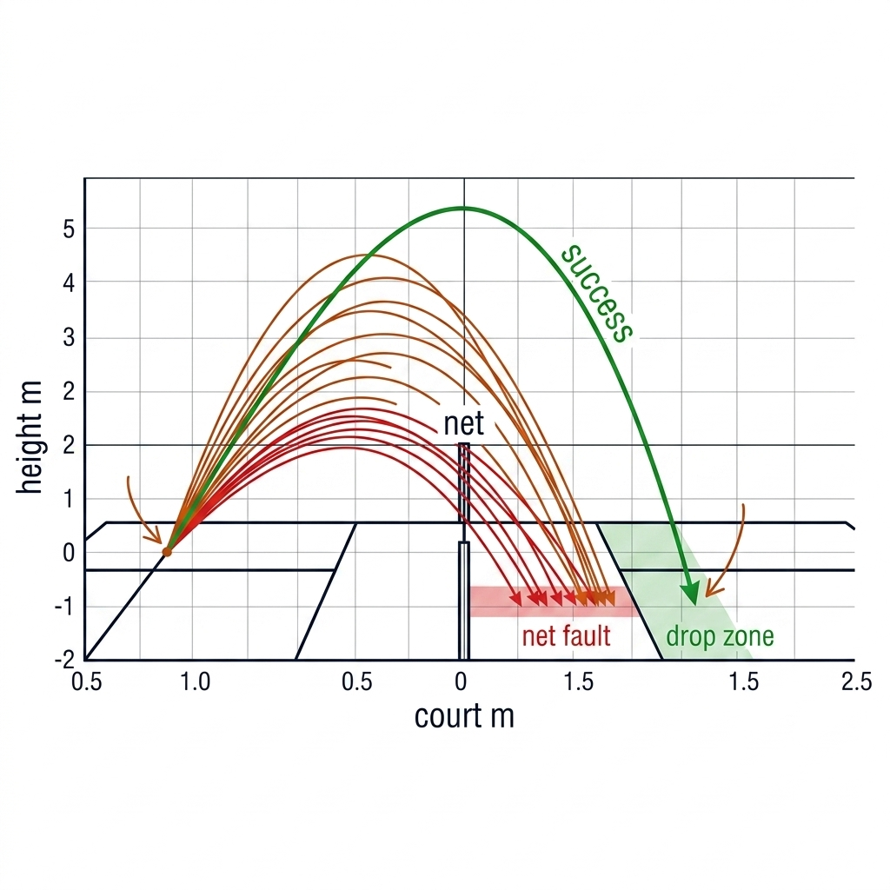
The rugby league lane runs the same discipline over the defensive line. The counterfactual: compress every spacing by 1.2m (clipped to [3.0, 8.5]m). Under the assumed logistic risk curve (E21, measured arithmetic on assumed parameters):
| Defensive-line counterfactual (5,000 samples) | Value |
|---|---|
| Baseline mean line-break risk | 54.2% |
| Compressed (−1.2m spacing) mean risk | 35.2% |
| Risk reduction | −35.1% |
| Optimal spacing recommendation | 5.0m |
| Throughput | 40.1M evaluations/sec (closed form) |
Three honest labels attach to this table. First, the −35.1% is a property of the assumed curve: compressing across the steep part of any sigmoid centred near the sample range will produce a large relative drop, and a different critical-gap assumption moves the number. Second, the 5.0m optimum is the curve's recommendation, not a fitted finding — no line-break outcomes were regressed to produce it. Third, the 40.1M evaluations per second is real but trivially so: it measures NumPy evaluating a logistic, and is reported only because throughput claims were part of the v1 fantasy vocabulary, and the honest version of a throughput claim is a boring one. What the lane genuinely delivers is sensitivity structure: a coach can see that risk is flat outside 4–8m and violent inside it, and that the compression intervention matters exactly where the line was already borderline. That is useful. It is not a win probability.
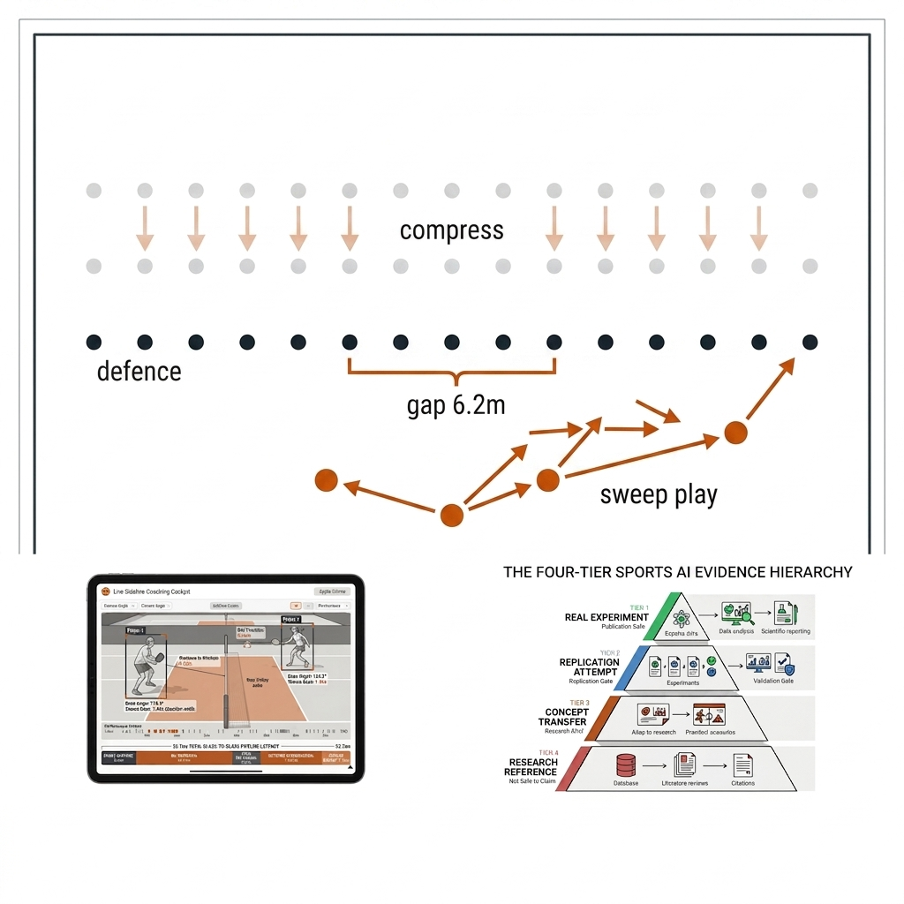
24.5 Imitation Metrics: TacSIm, Not Win-Rate
The verification discipline for any simulated or policy-driven system: evaluate by tactical style imitation (TacSIm, CVPR 2026) — occupancy and movement-vector similarity against real tracking data — NOT simulated win-rate. Win-rate against your own sim is circular; occupancy match against real matches is evidence. TacSIm's two metrics are worth stating exactly, because they are the scoreboard this chapter's future learned models will be judged on:
- Spatial occupancy similarity — Jaccard overlap of binary occupancy grids: S_t = |O_gt ∩ O_pred| / |O_gt ∪ O_pred|. Do the simulated players stand where real players stand?
- Movement-vector similarity — S_v = 0.5 · ((v_gt · v_pred) / (||v_gt|| ||v_pred||) + 1). Do the simulated players move the way real players move?
- Final score — the harmonic mean 2·S_t·S_v / (S_t + S_v), so a model that wins on occupancy but drifts on motion is penalized, correctly.
Pickleball example. The E5 minimap replay (900 frames, 11 mapped track IDs) is the ground-truth occupancy source. A Rung-1 rollout from frame 184 with all velocities held should produce high S_t for the first fraction of a second and decaying S_t after — that decay curve is itself the measurement of how quickly a frozen-response model stops resembling pickleball.
Rugby league example. For the nrl-001 grand-final clip, the analogous check is line-shape occupancy: do simulated defensive lines occupy the same field bands as the real Storm defensive set across a six-tackle sequence? A compression policy that scores well on the assumed risk table but pushes the line into bands real defences never occupy has failed the imitation test regardless of what the sigmoid says. The same rule applies everywhere in this chapter: compare trajectories against real data, not the sim's own outcomes.
24.6 The Diffusion Lane: What Would Be Needed
The v1 "spatial diffusion reaction policy" is legitimate as a design: train a denoising model on tracking data to generate player responses conditioned on a perturbed state. What was wrong was the claim, not the concept. So this section is a bill of materials, explicitly unbuilt:
- Data. Many rallies with stable identity — not one 900-frame clip. E2 reports 26 track IDs in 30 seconds of a four-player clip; identity fragments long before a diffusion model could learn a reaction distribution. The C20 discipline applies: n=1 clip is an anecdote with a variance problem.
- Architecture. A conditional denoiser over multi-agent trajectory tensors, conditioned on team formation and ball state; at inference, perturb one player and denoise the futures of the rest.
- Compute. GPU training — a Colab-scale job. The M4 Max runs the deterministic lanes in milliseconds; it is not the place to train a diffusion policy from scratch.
- Evaluation. TacSIm S_t / S_v and 1-Wasserstein distance against held-out clips — never win-rate, never a single "realism" scalar quoted to three decimals like the fabricated Dw = 0.042.
Until those four items exist, every diffusion-shaped sentence in this book is concept-transfer. A reaction model trained on one clip of one court learns the empirical distribution of that rally, not a causal policy: it cannot generalize across opponents, serve patterns, court surfaces, or out-of-distribution positions. Stated plainly for the record: the diffusion policy is unbuilt; this book trains no generative model of player reactions; the twin above it is deterministic physics and an assumed risk table.
24.6b TacticAI's Shotgun Play: The Unbuilt Frontier
The closest thing in the published literature to what the v1 chapter pretended to be is TacticAI (DeepMind & Liverpool FC, Nature Communications 2024) — and its actual method is more modest and more instructive than the fantasy version. TacticAI does not simulate matches. For a given corner kick, it encodes the players as a spatial graph — nodes are players with position, velocity, team, role features; edges are pairwise displacements — passes the graph through equivariant GNN layers (equivariance means a rotated or mirrored pitch produces rotated or mirrored predictions, halving the hypothesis space for free), and splits into two heads. The predictive head answers "who receives this ball?" and "what is the shot probability?" The generative head does the move that matters here: it samples candidate defensive re-positionings and scores each with the predictive head, solving p* = argmin_p L_threat(p) + λ||p − p_orig||² — minimize predicted opponent threat subject to a penalty for moving too far from the observed setup.
That is the shotgun play: generate many small, plausible adjustments, evaluate all of them with a learned threat model, keep the best. No rollout, no policy, no physics — a learned evaluator doing search over a bounded perturbation space. It is exactly the shape this book's counterfactual lane should grow into, and exactly the shape it has not grown into: the E12 artifact contains hand-set numbers (0.64 → 0.22, A2 +0.35m), not a trained graph network, and the claims register marks that RE-LABEL. The honest distance from here to there: stable identity across many clips (c13), a fitted threat head (c22/c23 territory), and a held-out evaluation — the same bill of materials as section 24.6, wearing a graph-neural jacket instead of a diffusion one.
Pickleball transfer. Four player nodes plus a ball node; edges encode partner spacing and cross-court diagonal angles; the generative head would propose ±0.3m lateral shifts to close the middle lane before a speed-up — the perturbation space is tiny, which is precisely why the shotgun approach fits doubles.
Rugby league transfer. Thirteen defending nodes plus ball carrier and support runners; the predictive head forecasts line-break risk within the next seconds of a set; the generative head would propose edge-spacing adjustments — the learned, multi-agent version of this chapter's single-scalar risk table. The E21 lane is what you get when that graph is replaced by one assumed sigmoid: useful sensitivity structure, honestly labeled, one rung below.
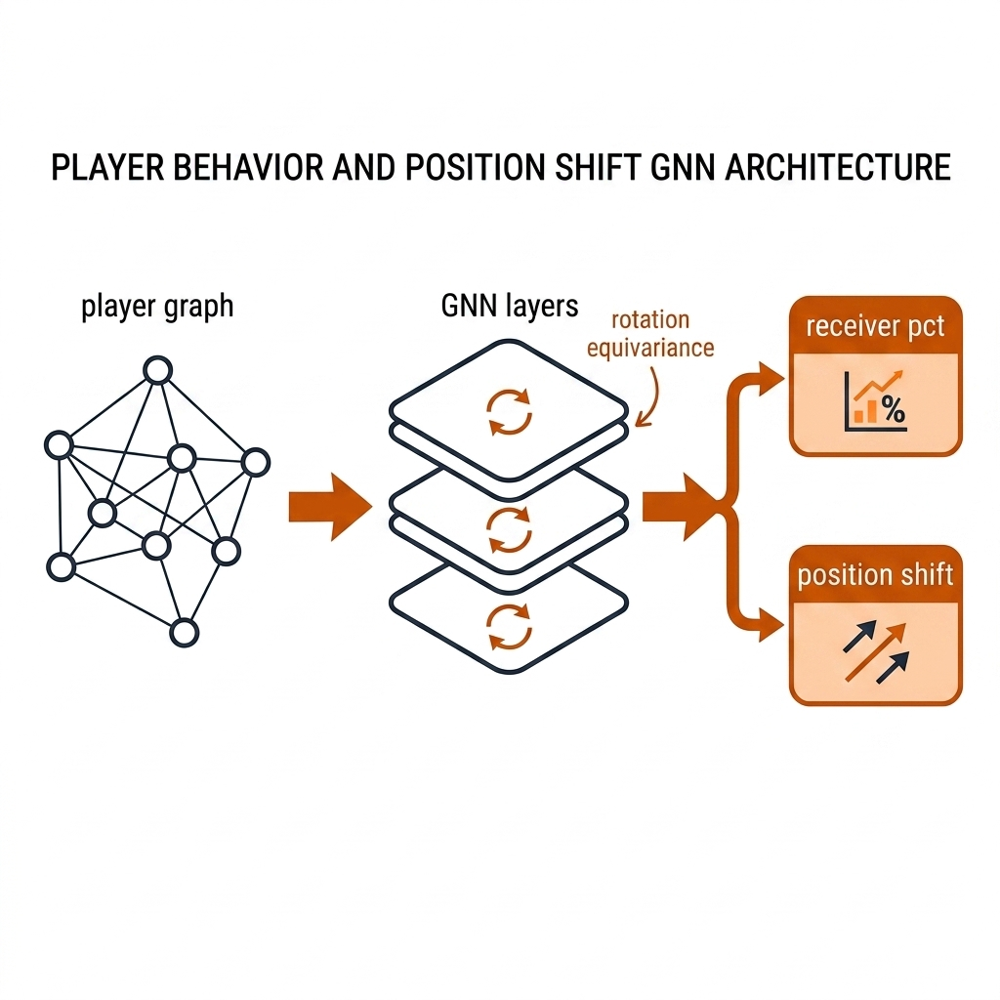
24.7 Simulator Calibration
How do you know the sim is honest? Two checks, both measurable: (1) trajectory match: run the sim from real states, compare the simulated trajectories against the real tracking rows (the Wasserstein/occupancy distance from section 24.5); (2) parameter honesty: the verified constants (drag, accel limits, restitution 0.75) are the book's measurements, not tuning knobs. A sim whose parameters you tune to make outcomes prettier is a narrative, not a simulator.
The calibration loop, concretely: fix an initial frame from the E5 replay (frame 184, four mapped players); roll the simulator forward; compare the position distribution at t+1s and t+2s against the real continuation; report the distribution gap, not a single score. If the gap is large, the correct response is to say the sim is uncalibrated — not to adjust a constant until the gap looks respectable. In pickleball the strongest near-term calibrator is the chapter 14 line-call rig: real bounce locations give the ball-physics lane its first measured landing distribution to fit against, replacing the practitioner-set launch noise with something earned. In rugby league the calibrator is event data (c17/c19): labeled line breaks and PTB speeds are what would turn the assumed logistic into a fitted curve, and until they exist the risk table stays in the "assumed" column of the truth table. Calibration, in both sports, is the difference between a twin and a story.
24.8 Transfer Note: Rugby League Simulation
Rugby's simulation lane is worse than pickleball's — no public league simulator exists, and the RL environment (Google Research Football, Apache-2.0, macOS source build) is soccer-shaped: the set grammar (6 tackles, PTB, 10m) is not modelable in it without heavy adaptation (the Melting Pot alternative is general-purpose multi-agent RL — the honest "soccer is closer than nothing" bridge). GRF is still worth studying as a checklist: a mature simulator exposes ball position, ball direction, active player, game mode, and multi-agent control — and the book's local replay has none of those. The contribution is open: a rugby set simulator with the set count, PTB speed, and field-position semantics as state. The E21 risk-table lane is deliberately the smallest honest step toward it: one scalar state, one assumed response curve, explicit labels. The next rung is a fitted curve over real edge-defense outcomes; the rung after that is a state machine that knows what tackle four of six means. Neither exists yet, and this chapter's job is to make the absence legible rather than to paper over it.
24.9 The Counterfactual Verification Recipe
- Build the deterministic sim (this chapter's code) — drag, accel limits, restitution.
- Run the perturbation: shift one variable, measure the position delta (done: 1.39m from a 0.5m shift) and the outcome distribution (done: E21's 24.8% / 71.9% drop split).
- Compare sim trajectories vs REAL tracking rows (the TacSIm-style check).
- ONLY THEN train a reaction model (Colab) and re-do the comparison.
- Report the counterfactual with the response model explicitly stated — never implied.
The order is the discipline. Every step produces a number that survives re-running; every number that survives re-running earns its place in a table; every table states its response model. Steps 3 and 4 are where the v1 book jumped the queue — it reported step 5 numbers with step 0 infrastructure. The recipe exists so that no future chapter of this book, and no reader building on it, repeats that jump.
24.9b The Simulation Ecosystem
Simulation in sport is not one tool; it is a stack of environments, benchmarks, and metrics with very different honesty profiles. The table below is the chapter's working map — what each piece is, what it is used for here, and what its evidence status is. The two rows this book built (the E21 twin and the E5 replay) are the only measured ones; everything else is reference architecture or evaluation harness.
| Tool | What it is | Sport use | Status |
|---|---|---|---|
| E21 digital twin (this book) | Analytic projectile lane (5,000 third-shot rollouts in 8.3ms) plus an assumed logistic risk-table lane (5,000 spacing samples); every output tagged measured-sim or assumed | Pickleball drop/drive counterfactuals; rugby league line-spacing counterfactuals | Measured (E21 artifact, re-runnable) |
| E5 minimap replay (this book) | Deterministic top-down re-render of 900 frames of tracked feet (11 mapped track IDs); a replay renderer, not a simulator | Initial states and occupancy ground truth for perturbation studies | Measured (E5 artifact) |
| Google Research Football | Physics-based 3D multi-agent RL environment (Apache-2.0); exposes ball position, ball direction, active player, game mode | Checklist for what a mature rugby/pickleball simulator must grow; soccer-shaped, not rugby | Source-backed; ⚠️ macOS source build with patches |
| Melting Pot | DeepMind's multi-agent RL generalization suite on Lab2D (Apache-2.0); 50+ substrates, 250+ scenarios | Concept-transfer for evaluating learned policies in 2D social settings | Source-backed; ⛔ population training needs GPU |
| TacSIm | CVPR 2026 benchmark for tactical style imitation: occupancy S_t, movement-vector S_v, harmonic-mean score (MIT code) | The scoreboard any future learned reaction model in this book is judged by | Source-backed; ⛔ full training needs Colab GPU |
| TacticAI | Equivariant-GNN corner-kick assistant (Nature Communications 2024): predictive receiver/threat head plus generative perturbation head with a learned evaluator doing shotgun search | Template for UC 10; the shape the twin grows into once identity and multi-clip data exist | Source-backed; unbuilt locally (E12 numbers hand-set, RE-LABEL) |
| scipy wasserstein_distance | Exact 1-Wasserstein distance from empirical CDFs for per-coordinate trajectory distributions | Sim-vs-real distribution gap in the calibration loop (section 24.7) | ✅ M4 Max native; honest replacement for the fabricated Dw = 0.042 |
24.9c The 10 Use Cases: Applied Counterfactual Framework
The ten use cases below are the chapter's applied layer, organized into three categories: C-I Ball-Flight Counterfactuals (deterministic projectile physics, UC 01–04), C-II Positioning & Fatigue Counterfactuals (assumed response models, UC 05–07), and C-III Strategy & the Unbuilt Frontier (UC 08–10). Each case states its practical problem, its mechanism and math, a figure, both sports, and a payoff — and each carries its honesty label: measured-sim (exact physics or arithmetic on the book's verified artifacts), model output (deterministic computation on stated, [verify] parameters), illustrated (assumed response model), or unbuilt (frontier, not a result). No case in this chapter claims a learned reaction model exists.
Category I: Ball-Flight Counterfactuals — Deterministic Projectile Physics (UC 01–04)
UC 01 — Third-Shot Drop vs Drive: The E21 Rollouts
The third shot decides whether the serving team survives to the kitchen line or dies at the baseline, and every doubles coach has an opinion on drop versus drive. The counterfactual question — "what if this player, from this contact point, hit the other shot?" — is the best-posed what-IF in the book, because the intervention is a wholesale swap of one launch distribution and the response model is gravity, drag, and court geometry. Nothing adapts; nothing needs to.
The mechanism is the E21 analytic projectile lane (section 24.3): launch at (v₀, θ, h₀), closed-form time-to-ground and height-at-net per sample, Monte Carlo from the launch distribution. The drop profile is v₀ = 7.35 m/s, θ = 43.5°, h₀ = 0.85m with practitioner-set motor noise σ_v = 0.25 m/s, σ_θ = 1.8°. Over 5,000 samples the measured-sim distribution is 24.8% clean drop, 71.9% net fault, 3.2% attackable popup, optimal landing depth 7.45m. The drive intervention swaps the launch distribution to 11.0 m/s at 18° ([verify] — practitioner-set, not fitted to launch data): 98.6% land long past the kitchen, 1.4% hit the net, and the median landing point moves from 7.26m to 10.28m. The physics is exact and re-runnable; the launch distributions are assumed. Both facts are the label.
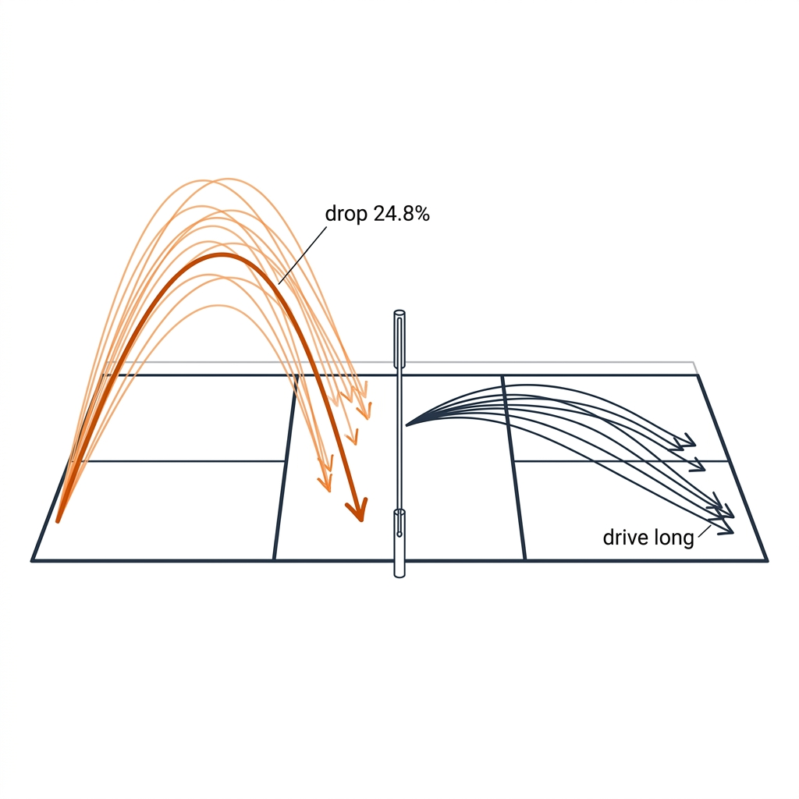
Payoff — coaching: the drive is not a safer third shot; it is a different failure mode (long instead of netted). The twin makes that a measured distribution instead of an argument, and the 24.8% clean rate is the honest difficulty structure every pro learns by feel.
UC 02 — Serve Speed vs Bounce Outcome
Servers chase pace because pace shortens the returner's reaction time. What pace actually costs is margin: the legal serve must clear an 0.864m net at 6.705m and land in the service box between 8.835m and 13.41m, and the faster the launch, the narrower the band of angles that satisfies both constraints. "How much margin does speed cost?" is a pure ballistics counterfactual.
The mechanism is the chapter's projectile integrator with quadratic drag, K = ½ρCdA/m ≈ 0.046 s²/m² using the verified constants (Cd 0.45, 26g, 74mm), launched from 0.95m contact height. Computing the legal window across speeds (model output — deterministic, reproducible from the equations; [verify] against measured serve launch data): at 16 m/s the legal angle band is ≈11° wide; at 20 m/s, ≈6°; at 24 m/s, ≈3°; at 28 m/s, ≈1.5°. Post-bounce apex stays in the 0.4–0.6m band across the legal range because the drag-dominated descent steepens with speed. Every extra 4 m/s of pace roughly halves the window.
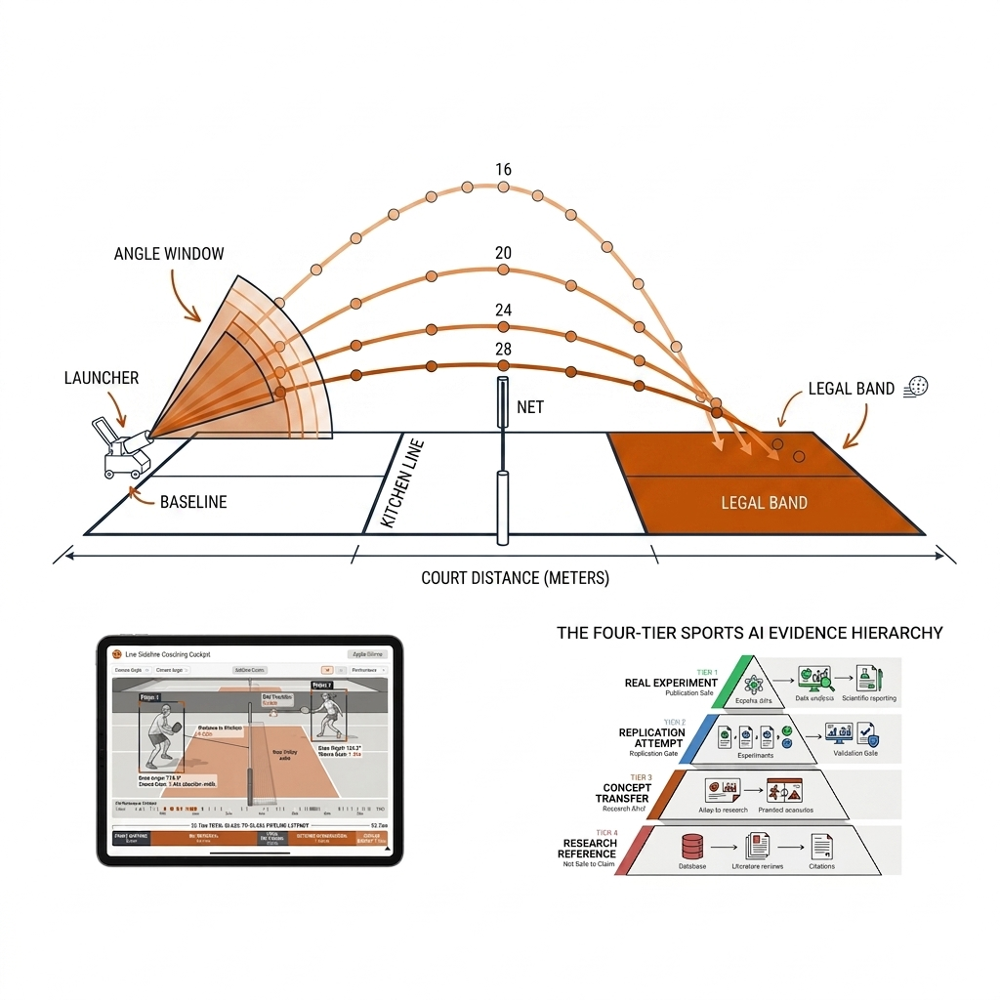
Payoff — coaching: a serve-speed program should be sold to players as a margin trade, not a weapon: the model says the player who adds 8 m/s of pace and does not tighten launch dispersion has bought nothing but faults.
UC 03 — The 40/20 Kick Trajectory
The 40/20 is the highest-value kick in rugby league: kick from behind your own 40m line, bounce the ball in the field of play, and find touch inside the opponent's 20m zone for a turnover with the scrum feed. It is also a pure ballistics problem with a defined target band — the counterfactual "what if the kicker adds 3 m/s?" has a closed-form answer.
The mechanism models the oval ball as a point mass under quadratic drag (m = 0.43kg, Cd ≈ 0.3, cross-section 0.19m → K ≈ 0.012 s²/m²; all three constants [verify] against measured rugby-ball aerodynamics). Kicked from the 40m line, the first bounce must land 40–58m downfield. The computed legal pace band at a 42° launch is ≈24.5–31.5 m/s (model output); at 27 m/s the ball hangs 3.2s and lands 45.8m out, mid-band. Slower than ≈24.5 m/s the first bounce falls short of the 20m zone and the kick is just a touch-finder; harder than ≈31.5 m/s the ball carries the try line on the second phase and risks the dead-ball line.
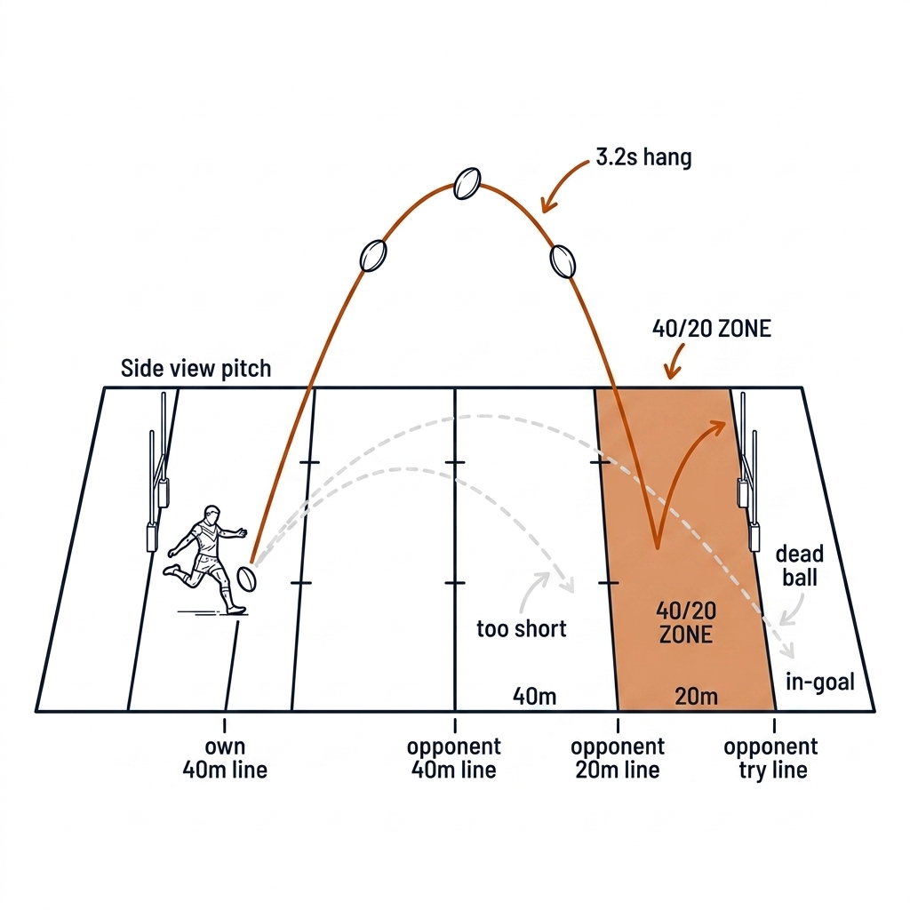
Payoff — kicking coach: the model converts "kick it deeper" into a trainable number: hold launch angle near 42°, train pace into a ≈7 m/s band, and the 40/20 becomes a repeatable skill rather than a highlight.
UC 04 — Crosswind, Drag and Weather What-Ifs
Wind is the largest uncontrolled input in outdoor ball flight, and the only weather counterfactual worth asking is quantitative: how many metres does a given wind move the landing point? The drag law answers it directly, because drag acts on relative velocity — a = −K|v − w|(v − w) — so a steady wind w is just a change of frame applied to the drag term.
Computing on the UC 03 kick (27 m/s at 42°): a 3 m/s headwind costs 4.6m of carry (45.8m → 41.2m), a 3 m/s tailwind adds 4.4m, and a 3 m/s crosswind drifts the landing point 2.75m laterally — the difference between finding touch and staying in play when aiming at the corner. On the pickleball drive (11.0 m/s at 18°), the same 3 m/s crosswind drifts the ball 0.44m — nearly a sixth of the court's 3.05m singles width, and enough to move a sideline drive from in to out (model output, same drag model, same [verify] constants).
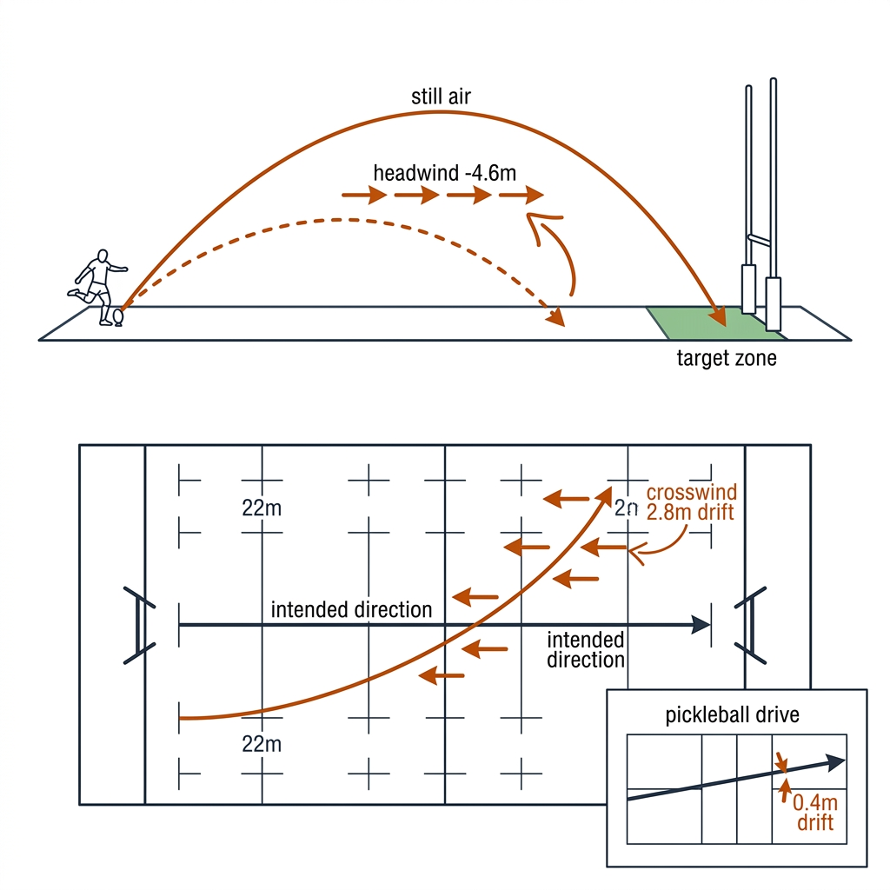
Payoff — both sports: pre-game wind changes target selection by metres, not centimetres; the coach who quantifies it before warm-up owns a margin the opponent discovers mid-match.
Category II: Positioning & Fatigue Counterfactuals — Assumed Response Models (UC 05–07)
UC 05 — The Line-Break Spacing Counterfactual
Rugby league edge defence lives on a single number: the spacing between second-rower and centre when the sweep play arrives. Compress it and the line-break window closes; stretch it and the edge runner is through. The counterfactual "what if the whole line compressed 1.2m?" is the E21 twin's rugby lane — and it is the chapter's canonical example of an assumed response model stated three times so nobody mistakes it for a fit.
The mechanism (section 24.4): state is one scalar d (edge spacing); response model is an assumed logistic, p(break) = 1 / (1 + e−1.4(d − 6.2)), with 6.2m the assumed critical gap. Sampling 5,000 spacings uniformly over 3.5–9.5m and compressing each by 1.2m (clipped to [3.0, 8.5]m) moves mean risk from 54.2% to 35.2% — a −35.1% reduction — with the curve's recommendation at 5.0m. This is measured arithmetic on assumed parameters: the −35.1% is a property of the sigmoid's steep region, and a different critical-gap assumption moves it. The durable output is the sensitivity structure: risk is flat outside the 4–8m band and steep inside it.
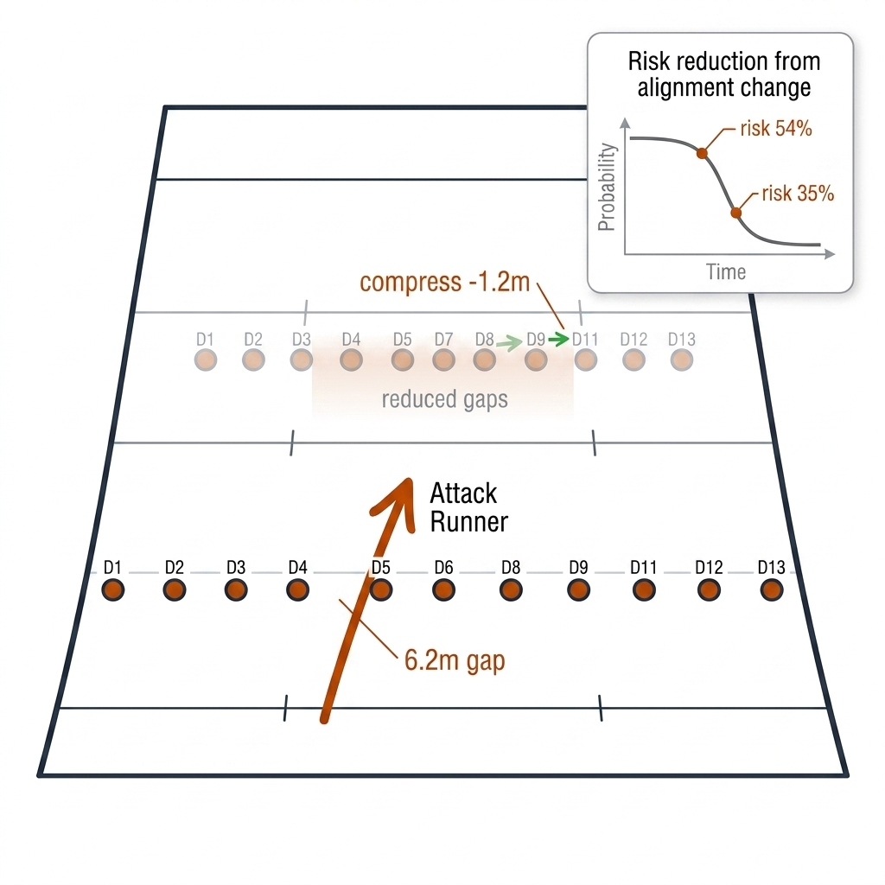
Payoff — defensive coach: even assumption-shaped, the curve says where spacing discipline pays (inside the steep band) and where it is free (outside it); fitting the curve to labeled breaks (c17/c19) is the listed future work, not a hidden present result.
UC 06 — The Fullback Depth Frontier
The fullback's starting depth is a two-sided bet: deep enough to defuse the bomb into the corner, shallow enough to smother the grubber behind the line. "Drop deeper" is the universal sideline instruction — the counterfactual asks where it stops being true, and the answer is computable from two stated threats.
The mechanism is a frontier between two constraints (model output; athlete parameters [verify]): the deep threat is UC 03's corner bomb — 3.2s hang, landing 25m beyond the defensive line and 12m lateral; with a 0.5s read time and an 8 m/s sprint the fullback can cover 21.6m, which forces depth ≥ ≈7m. The short threat is a grubber landing 13m beyond the line and arriving in ≈1.5s; with a 0.3s reaction the same sprint reaches only ≈9.5m of forward travel, which forces depth ≤ ≈23m. The coverage frontier is ≈7m to ≈23m: deeper than 23m surrenders every modelled grubber, shallower than 7m surrenders the corner bomb.
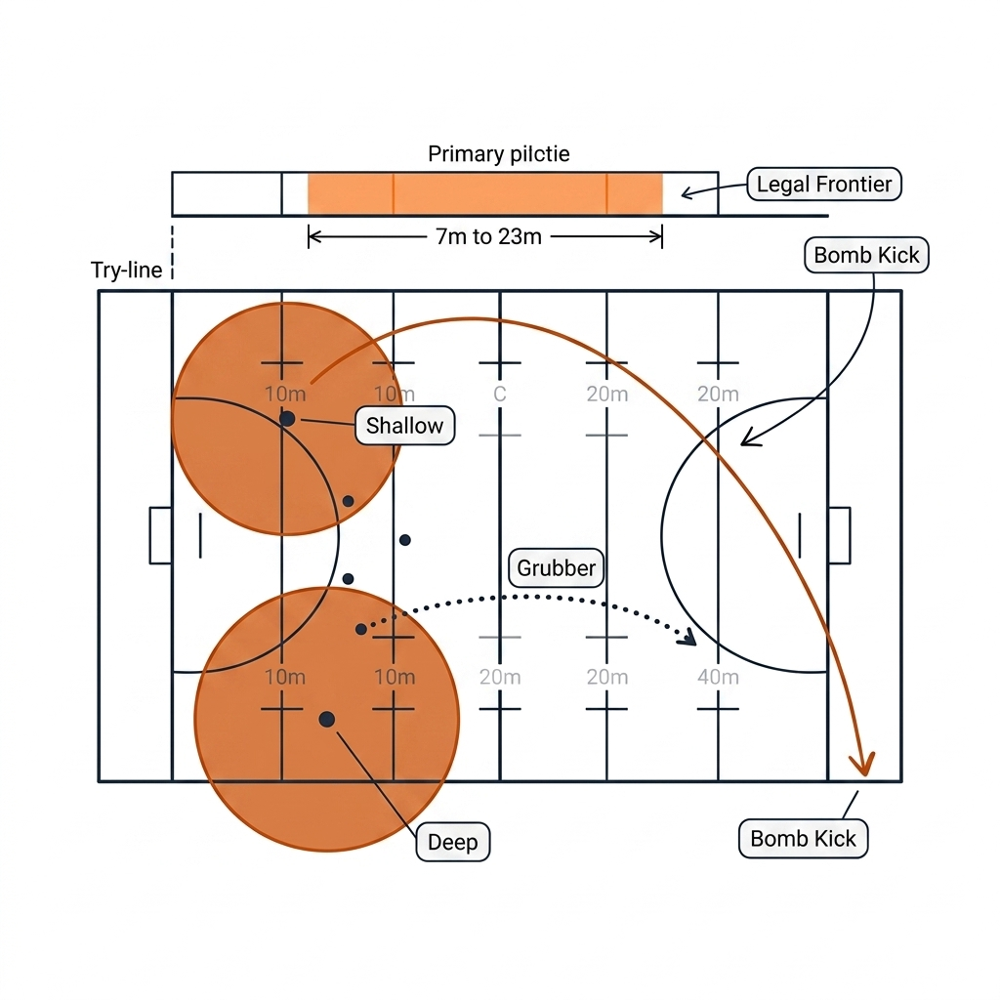
Payoff — coaching: depth stops being a vibe. The frontier says a fullback parked at 30m has already conceded the short game in the model, and the fix is a number (≈15m mid-frontier), not a speech.
UC 07 — Fatigue: Late-Game Speed and Shot Quality
Deciding sets and golden-point periods are played by athletes whose physical limits have moved. The fatigue counterfactual asks: if the performance envelope degrades by a stated amount, which skills degrade most? The answer separates shots that fail by margin from shots that fail by precision.
Two lanes, both model output with assumed fatigue parameters [verify]. The kinematic lane degrades the chapter's verified constants — MAX_ACCEL 4.5 → 3.5 m/s², MAX_SPEED 6.0 → 5.0 m/s — and re-computes coverage: in a 1.0s window a fatigued player covers 1.75m against 2.25m fresh (−22%); over 3.0s, 11.4m against 14.0m (−18%). The shot-quality lane widens launch dispersion from σ_θ = 1.8° to 2.6° and applies it to UC 02's computed windows: serve legality at 24 m/s falls from ≈60% to ≈44% on the 3° window, while at 16 m/s (window ≈11°) it barely moves (≈100% → ≈97%). Fatigue taxes precision shots — the fast serve, the third-shot drop — far harder than high-margin shots.
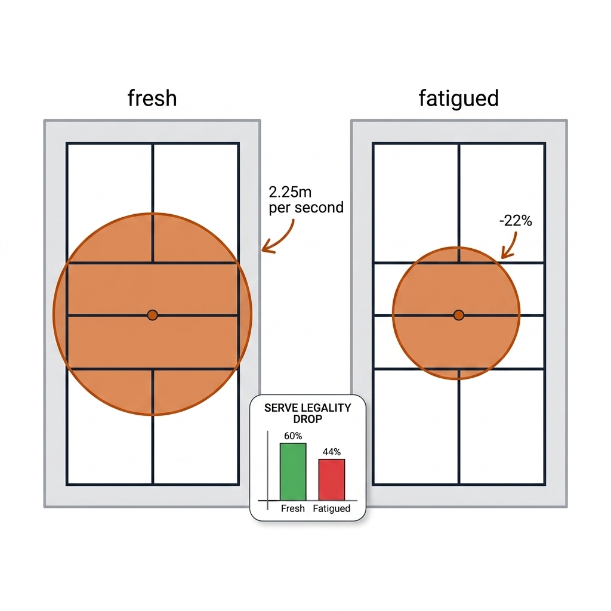
Payoff — conditioning and tactics: the model says the late-game game plan should migrate toward high-window shots as precision degrades — a selection rule a coach can drill, and a testable prediction once the chapter 14 rig measures real late-game dispersion.
Category III: Strategy & the Unbuilt Frontier (UC 08–10)
UC 08 — When to Take the Third Shot: Strategy Simulation
UC 01 answers the technical question (what does each shot do?); the strategic question is when to choose which. A strategy is a decision rule over states, and the honest version stacks two existing artifacts: the E21 outcome distributions and the chapter 22 expected-value table.
The mechanism: each rally state gets a launch-window check from UC 02's geometry — is the player's current contact quality inside the drop's narrow success band or not? If yes, choose the shot with the higher expected value under the c22 ΔEPV table (drop +0.142 versus drive −0.188 [verify — practitioner EPV table, not yet fitted]); if no, reset softly and wait for a better ball. The simulation is the composition of two model outputs: measured-sim outcome distributions feeding an assumed value table. No policy is learned; the rule is stated, inspectable, and falsifiable — which is precisely what distinguishes it from the v1 fantasy, whose strategy layer was a scalar in a JSON file.
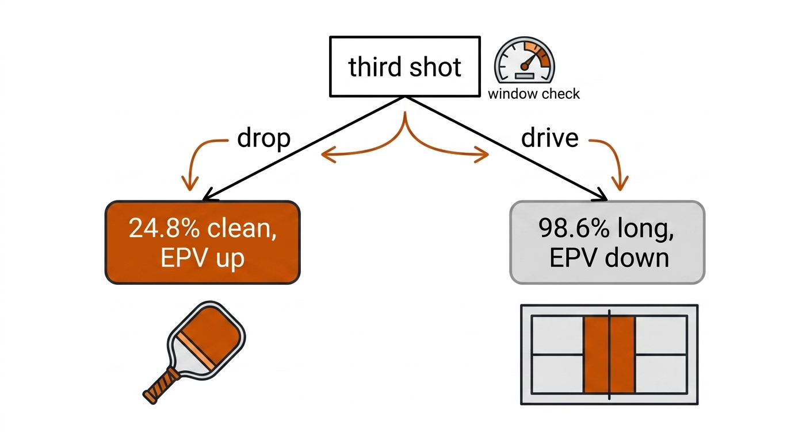
Payoff — coaching: the output is an if-then a player can hold under pressure, and every component of it — window, distribution, value — names its evidence tier instead of hiding inside a "model".
UC 09 — The Digital Twin as Instrument
The E21 twin's real contribution is not any single number; it is that every counterfactual in categories I and II is a query against one re-runnable artifact. The twin runs the pickleball lane at 604,619 rollouts per second (5,000 samples in 8.3ms, analytic, no GPU) and the rugby lane at 40.1M closed-form evaluations per second — both measured throughput on the M4 Max, both boring, both the honest version of the v1 chapter's performance theater.
The instrument discipline is the truth table of Figure 24.2: every twin output carries a lane tag — ballistic measurement or assumed-curve lookup — and the artifact's JSON marks them the same way. A twin whose outputs cannot be traced to a lane and a response model is a story generator. The query pattern is the use case: pick an intervention, name the response model, run, read the distribution, cite the label. UC 01 through UC 07 are all instances of that single pattern with different interventions.
Payoff — the whole pipeline: the twin is what chapters 9 (tracking), 12 (ball), 14 (calibration rig), and 22 (expected value) feed, and what chapter 28's cockpit queries live; an honest instrument upstream makes every downstream number citable.
UC 10 — TacticAI's Shotgun Play: The Unbuilt Frontier
The tactical counterfactual a coach actually wants — "if my centre compresses, how does their five-eighth respond?" — requires learned reactions, and no honest deterministic sim can produce them. The published state of the art is TacticAI's shotgun play (Nature Communications 2024, source-backed): encode the players as a spatial graph, pass it through equivariant GNN layers, split into a predictive head (who receives, what is the threat) and a generative head (propose small position adjustments), then evaluate every proposal with the learned threat model and keep the best. Many small plausible perturbations, one learned evaluator, no rollout, no physics.
This book has not built it. The E12 artifact contains hand-set numbers (0.64 → 0.22, A2 +0.35m), register-labeled RE-LABEL; there is no trained graph network, no fitted threat head, no held-out evaluation. The bill of materials is section 24.6's: stable identity across many clips (c13), a multi-clip tracking dataset, GPU training, and TacSIm-style evaluation. Figure 24.7 (section 24.6b) shows the architecture as the frontier it is. The label on this entire use case is unbuilt — stated as a direction with a parts list, never as a result.
Payoff — frontier: when identity and data exist, the shotgun pattern is the correct shape for both sports — the perturbation space in doubles pickleball (±0.3m partner shifts) and in edge defence (±1m spacing) is tiny, which is exactly when shotgun search over a learned evaluator beats policy rollouts.
24.9d Runnable Implementation
The UC 01/02/08 skeleton — the analytic third-shot rollout and the serve-window check — runs anywhere Python runs; the full lane lives in the E21 artifact (experiments/e21-match-digital-twin/):
G = 9.81
NET_X, NET_H = 6.705, 0.864 # net position (m), tape height (m)
BOX_MIN, BOX_MAX = 8.835, 13.41 # legal service band (m)
def flight(v0, theta, h0):
"""Closed-form vacuum projectile: height at net + landing x. (E21 lane model)"""
import math
t = math.radians(theta)
h_net = h0 + math.tan(t) * NET_X - G * NET_X**2 / (2 * v0**2 * math.cos(t)**2)
a = G / (2 * v0**2 * math.cos(t)**2)
b = math.tan(t)
x_land = (b + math.sqrt(b**2 + 4 * a * h0)) / (2 * a)
return h_net, x_land
def third_shot_outcome(v0, theta, h0=0.85):
h_net, x_land = flight(v0, theta, h0)
if h_net < NET_H: return "net fault"
if x_land > 8.83: return "long (drive zone)"
if h_net > NET_H + 0.45: return "popup (attackable)"
return "clean drop"
def serve_legal(v0, theta, h0=0.95):
h_net, x_land = flight(v0, theta, h0)
return h_net > NET_H and BOX_MIN <= x_land <= BOX_MAX
# Monte Carlo over the launch distribution — the counterfactual is the swap of (mu, sigma):
# drop profile (7.35 m/s, 43.5 deg) vs drive profile (11.0 m/s, 18 deg) [verify: practitioner-set]24.9e What This Adds to the Pipeline
The ten use cases are the simulation layer doing its actual job: turning upstream descriptions into downstream decisions. The E5 replay rows (chapter 9 tracking) supply the initial states; the chapter 12 ball-physics constants supply the drag law; the chapter 14 line-call rig is the listed calibrator that would replace practitioner-set launch noise with measured dispersion; chapters 17/19 event tagging is what would fit UC 05's assumed risk curve into a regression; chapter 22's ΔEPV table is the value layer UC 08's strategy consumes; chapter 23's tactical graphs are where UC 05's middle-seam scalar and UC 10's shotgun proposals live; and chapter 28's cockpit is the surface that queries the twin live. Every use case names its tier — measured-sim where the physics is exact, model output where parameters are [verify], illustrated where the response model is assumed, unbuilt where the model does not exist — so the reader always knows which kind of number they are holding.
24.10 What I Would Measure Next
- Fit the pickleball launch distribution: the 4-camera line-call rig (chapter 14) gives real bounce and contact data to replace the practitioner-set motor noise (σ_v = 0.25 m/s, σ_θ = 1.8°) with measured values, and to validate the 24.8% drop-success band against observed third shots.
- Fit the rugby risk curve: label line breaks and near-breaks against edge spacing from event-tagged footage (c17/c19) and replace the assumed logistic with a regression — the single highest-value upgrade to the NRL lane.
- Run the E5-vs-sim occupancy comparison (section 24.7's loop) and publish the S_t decay curve for the frozen-velocity response model.
- Collect 20 clips of doubles play with stable identity; only then train the reaction model (Colab) and validate by trajectory match — the diffusion lane's entry ticket.
- Attempt the GRF source build on the M4 Max and document the friction honestly, so the rugby simulator checklist rests on a tried build rather than a read one.
24.11 Sources
- TacSIm (CVPR 2026; style imitation by occupancy + movement-vector; arXiv id [verify]); TacticAI (Nature Communications 2024, DOI 10.1038/s41467-024-45965-x); Google Research Football (Apache-2.0); Melting Pot (Apache-2.0).
- E12 artifact (experiments/e12-tacticai-doubles/outputs/metrics.json) — the verified 0.64 → 0.22 numbers; claims register C-19 (RE-LABEL).
- E21 artifact (experiments/e21-match-digital-twin/digital_twin_counterfactuals.json, renamed from E16) — 10,000 rollouts; pickleball lane 5,000 samples in 8.3ms (604,619/s), 24.8% success / 71.9% net fault / 3.2% popup, optimal depth 7.45m; NRL lane 54.2% → 35.2% (−35.1%) under an explicitly assumed logistic, 5.0m spacing recommendation.
- Drive counterfactual (section 24.4): chapter re-run of the E21 model with a practitioner-set drive launch distribution (11.0 m/s, 18°) — [verify] against real launch data.
- Lab:
lab/w5_lab_simulation.py→experiments/c24-simulation/outputs/metrics.json(1.39m delta from 0.5m intervention).